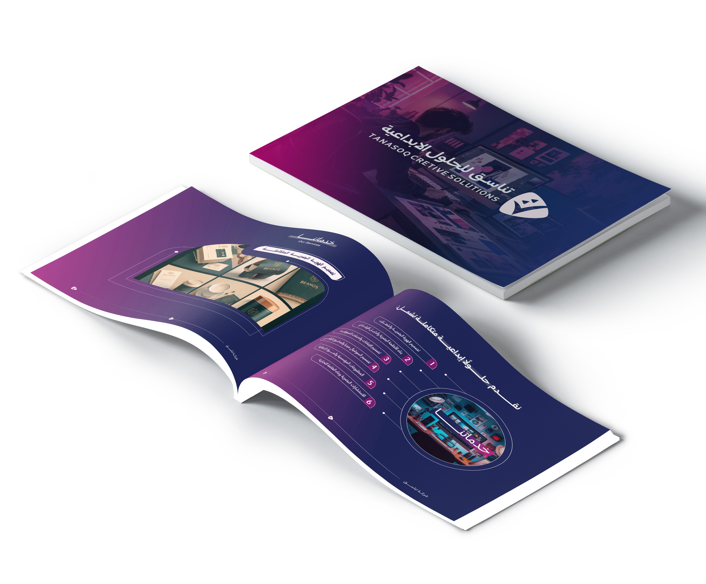
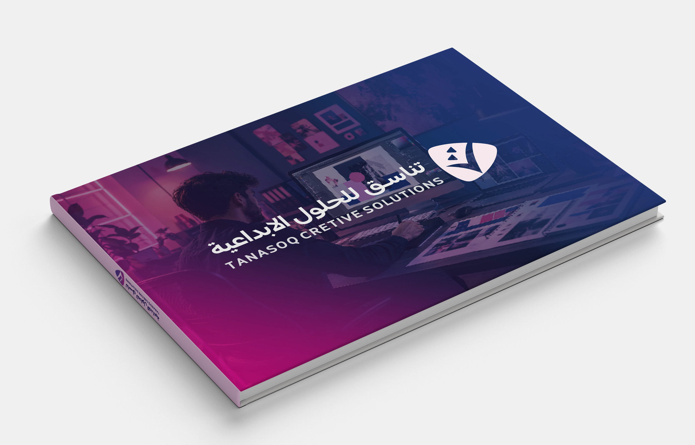
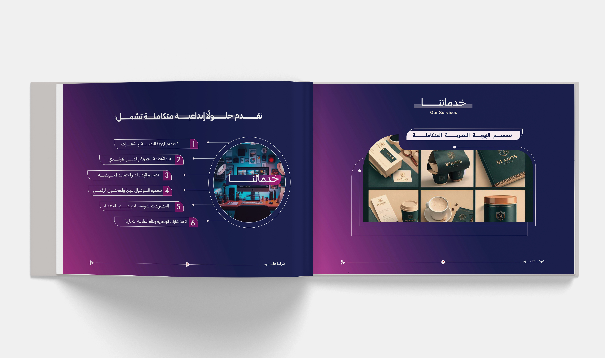
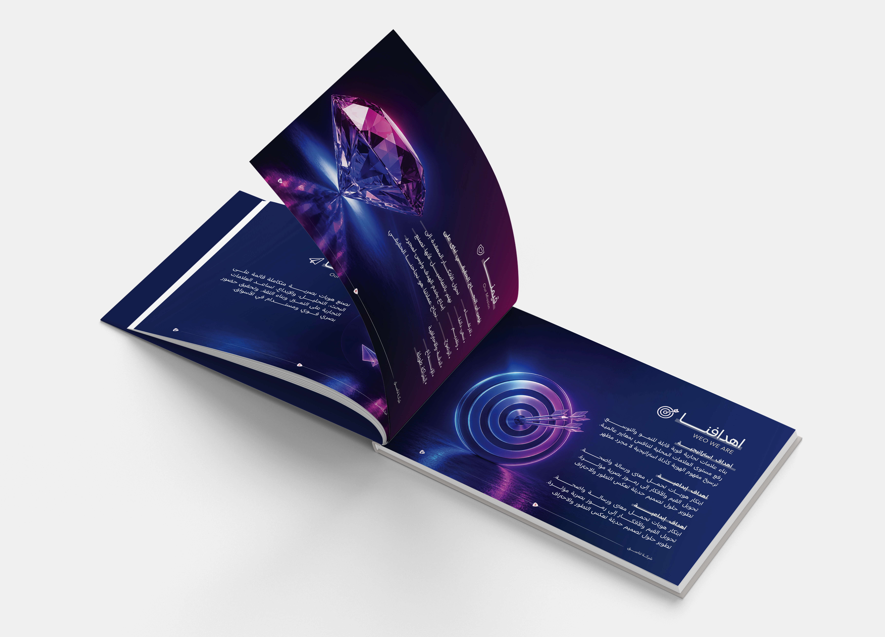
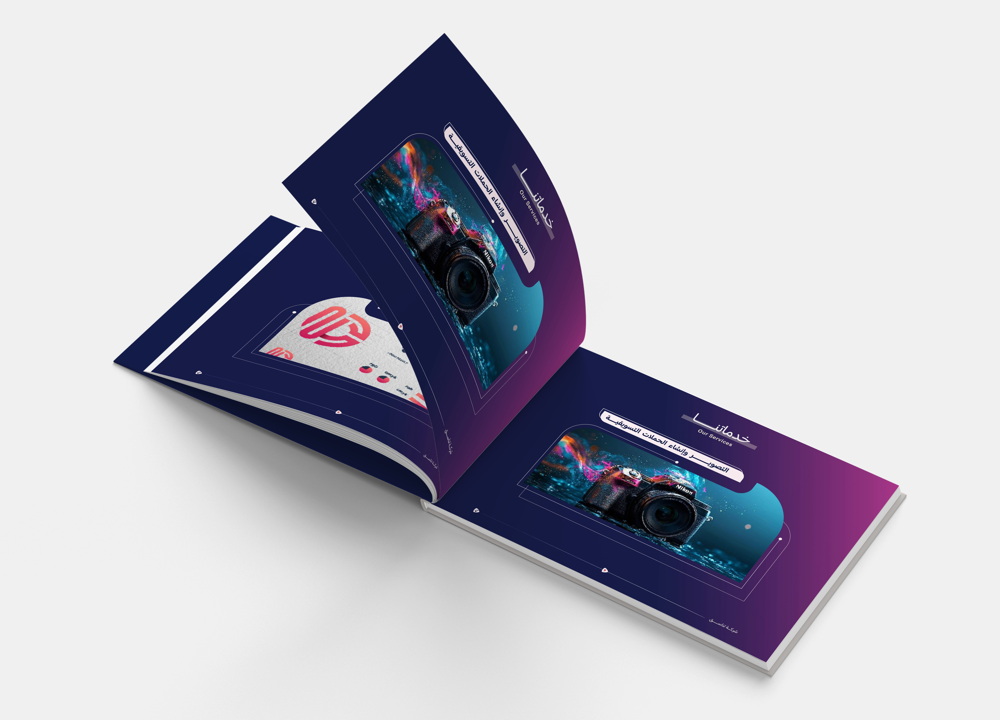
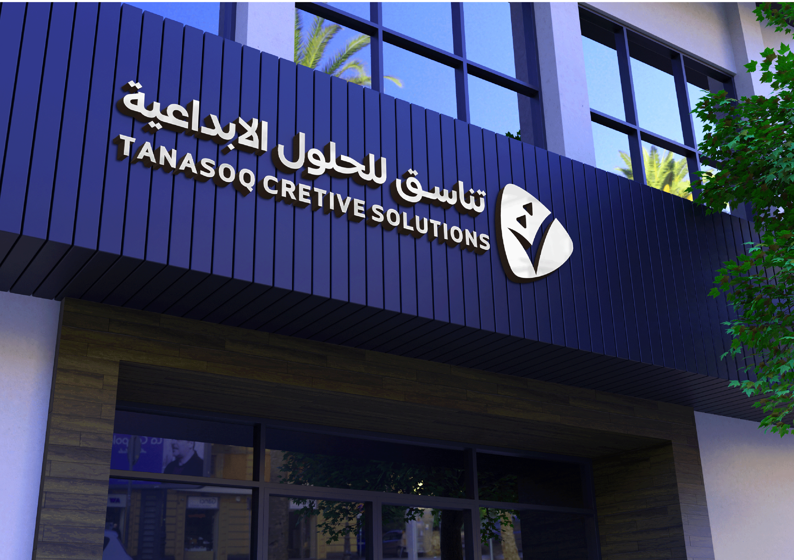

تصميم هوية بصرية متكاملة لشركة ناشئة في مجال الخدمات الإعلانية
شركة تناسق للحلول الإبداعية — TANASOQ CREATIVE SOLUTIONS
لماذا هوية بصرية لشركة ناشئة؟
يشهد قطاع الأعمال في الجمهورية اليمنية نمواً ملحوظاً في الشركات الناشئة، مما جعل الهوية البصرية عاملاً أساسياً في بناء علامة تجارية قوية تعكس قيم الشركة وتعزز حضورها وتميزها في السوق.
نمو ناشئ متسارع
قطاع الشركات الناشئة في اليمن يتوسع باستمرار
الهوية أساس العلامة
تعكس قيم الشركة وتبني جسراً من الثقة
حضور وتميّز في السوق
صورة ذهنية متسقة تفرض وجود العلامة
مشكلة المشروع
تعتمد العديد من الشركات على تصاميم بصرية غير مدروسة تفتقر إلى الاتساق والاحترافية، مما يؤثر في قدرتها على بناء صورة ذهنية قوية والتواصل الفعّال مع جمهورها المستهدف.
تصاميم بصرية غير مدروسة
تُبنى دون أساس استراتيجي أو دراسة للسوق
افتقار للاتساق والاحترافية
عشوائية التطبيق تُضعف صورة العلامة
ضعف التواصل مع الجمهور المستهدف
غياب الصورة الذهنية الموحدة يحدّ من الأثر
ثلاثة أثرٍ يدور حول قلب واحد
بناء الثقة
هوية متسقة تنقل صورة موثوقة أمام العملاء والشركاء، وترسّخ المصداقية في كل تعامل.
حضور العلامة
حضور بصري مميز يجعل الشركة محفورة في ذاكرة السوق، أينما ظهرت هويتها.
ربط النظرية بالتطبيق
نقل مفاهيم تصميم الهوية من القاعة الأكاديمية إلى واقع السوق اليمني الفعلي.
قيمة المشروع لا تقف عند الشركة — بل تمتد إلى القطاع والمجتمع الأكاديمي
ثلاث محطات من الفكرة إلى النظام
هوية بصرية احترافية
تصميم هوية بصرية احترافية لشركة «تناسق» تعكس رؤيتها وقيمها.
أول انطباع يليق بالعلامة منذ اللحظة الأولىنظام بصري متكامل
إنشاء نظام بصري متكامل يوحّد عناصر الهوية في جميع التطبيقات.
لغة بصرية واحدة من بطاقة العمل إلى الإعلاندليل استخدام الهوية
إعداد دليل للهوية يضمن توحيد استخدامها بما يعزز حضور الشركة وتنافسيتها في السوق.
هوية لا تنكسر، مهما كبرت الشركةأهداف مترابطة تبني الهوية خطوة بخطوة وتضمن استمرارها بعد الإطلاق
أين تبدأ الأهداف وأين تنتهي؟
وُضعت حدود واضحة للمشروع تمنع توسعه خارج نطاق الدراسة، وتضمن إنجاز المخرجات بجودة عالية.
هذه المجالات قد تكون امتداداً مستقبلياً للشركة، لكنها ليست ضمن مخرجات هذا المشروع.
لغة واحدة يلتقي بها الجميع
الهوية البصرية
النظام البصري المتكامل الذي يعبّر عن شخصية العلامة التجارية، ويشمل الشعار والألوان والخطوط وعناصر التصميم.
العلامة التجارية
الصورة الذهنية والسمعة التي يكتسبها المنتج أو الشركة لدى الجمهور، وتميّزها عن المنافسين.
الشعار
الرمز البصري المميز الذي يمثل العلامة التجارية ويعكس هويتها بشكل مختصر ومعبّر.
الخدمات الإعلانية المتكاملة
منظومة متكاملة من الخدمات التسويقية والإعلانية تشمل تصميم الهوية والإعلانات والمحتوى الرقمي والمطبوعات.
دليل الهوية البصرية
وثيقة مرجعية تحدد قواعد استخدام عناصر الهوية من شعار وألوان وخطوط، لضمان اتساق التطبيق.
الاتساق البصري
توحيد العناصر في جميع التطبيقات والمنصات، بما يبني حضوراً مألوفاً وموثوقاً للعلامة.
من نحن — Who We Are
تناسق شركة متخصصة في تصميم الهوية البصرية والتصميم الإبداعي وصناعة الأعمال الإعلانية. نؤمن أن التصميم ليس شكلاً جميلاً فقط، بل قوة استراتيجية تخلق الذاكرة وتصنع الحضور في السوق — كل علامة نعمل عليها ليست مشروعاً مؤقتاً، بل قصة صعود مستمرة.
رؤيتنا
أن تكون تناسق علامة إبداعية رائدة، وترقى بالأعمال الإعلانية، وتحوّلها إلى كيانات مؤثرة تنافس محلياً وتطمح عالمياً.
رسالتنا
صناعة هويات بصرية متكاملة قائمة على التحليل والإبداع، تساعد الأعمال الإعلانية على التميز وبناء الثقة وتحقيق حضور بصري قوي ومستدام في الأسواق.
«تناسق» اسم يجسّد البداية الجديدة والصعود المستمر. كل علامة تملك فرصة للنهوض والانطلاق، عندما تُبنى على هوية واضحة ورؤية ذكية.
«نؤمن أن نجاح عملائنا هو نجاحنا الحقيقي»
بناء علامات إعلانية قوية قابلة للنمو والتوسع
رفع مستوى العلامات المحلية لتنافس بمعايير عالمية
ترسيخ مفهوم الهوية كأداة استراتيجية لا مجرد مظهر
تحويل القيم والأفكار إلى رموز بصرية مؤثرة
حلول إبداعية متكاملة
نقدم ست خدمات متكاملة تغطي رحلة العلامة من الميلاد إلى الاستمرار:
تصميم الهوية البصرية والشعارات
بناء الأنظمة البصرية والدليل الإرشادي
تصميم الإعلانات والحملات التسويقية
تصميم السوشيال ميديا والمحتوى الرقمي
المطبوعات المؤسسية والمواد الدعائية
الاستشارات البصرية وبناء العلامة التجارية
الهوية على أرض الواقع
لمحة من عشرين تطبيقاً موثقاً — من موك أب المجلة إلى صفحات الدليل الإرشادي.






المعرض الكامل يضم ٢١ عملاً: الهوية الكاملة، صفحات الدليل، والموك أب — متاح في صفحة الأعمال
شاهد الهوية وهي تتحرك
عرض مرئي يجمع الشعار والتطبيقات في مشهد واحد — الهوية في حركتها الأولى.
عرض مرئي لهوية «تناسق» ومكوناتها
مخرجات المشروع كاملة
وثيقتان مرجعيتان متاحتان للقراءة والتحميل بصيغة PDF.
البروبوزال يوثق رحلة المشروع، والدليل يضمن استمرار الهوية — إثنان لا يفترقان
شكراً لكم
أخذنا الهوية من الفكرة إلى النظام، ومن الدليل إلى التطبيق — رحلة صُممت لتُروى بدقة، وتُبنى لتدوم.
«الهوية البصرية ليست شكلاً — إنها استراتيجية»